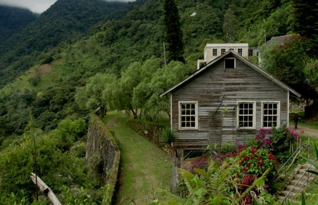
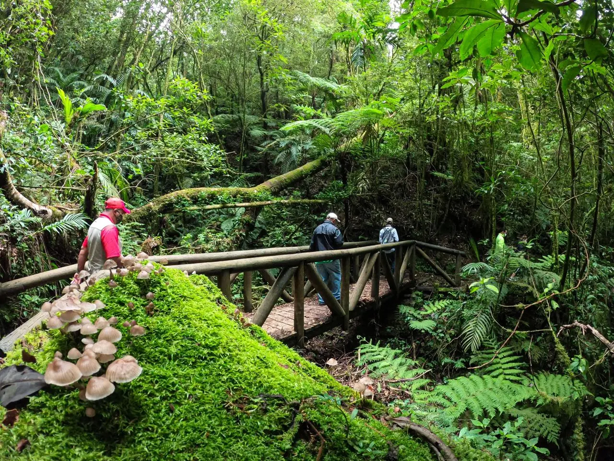
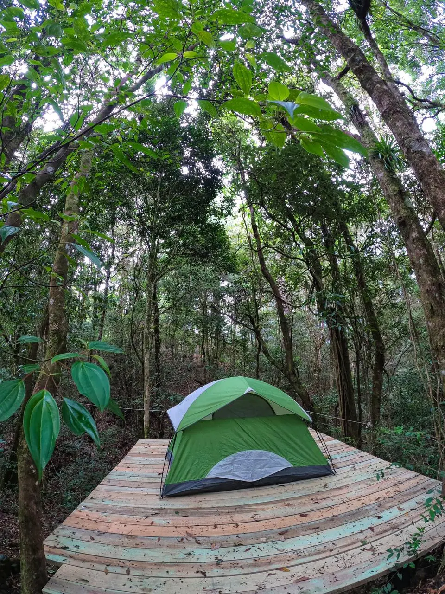

Let's Travel
Parque Nacional La Tigra

El Parque Nacional La Tigra está ubicado en el departamento de Francisco Morazán, aproximadamente a 15 kilómetros al noreste de Tegucigalpa.
El Parque Nacional La Tigra cuenta con una extensión de 24,040 hectáreas de bosque dividida en zona de amortiguamiento y zona núcleo, que forma parte de la cadena montañosa central de Honduras. El parque nacional es una fuente generadora de agua dulce y pura, así como zona de refugio para la biodiversidad nativa y migratoria
En La Tigra existen ocho senderos por recorrer: Sendero Granadillas, Jucuara, Bosques Nublados, La Esperanza, Sendero Principal, La Cascada y La Mina. Cada uno posee sus características y grados de dificultad, por lo que se recomienda realizar el recorrido con los guías autorizados. SERVICIOS: Senderismo, Áreas de acampar, alquiler de equipo para acampar, Canopy, Hotel de montaña, área de juego para niños, alimentación, Guias de montaña y cursos especializados de montañismo.
Para llegar hasta el centro de visitantes Jutiapa, se recomienda abordar el autobús en la estación ubicada en el parque Herrera, frente al Teatro Nacional Manuel Bonilla, las horas de salidas desde Tegucigalpa hasta Jutiapa son: 7:00 AM, 9:00 AM, 2:00 PM, 4:00 PM y 5:00 PM de lunes a viernes. Sábado y domingo de 8:00 AM, 10:00 AM, 12:00 MD, 1:00 PM y 3:00 PM